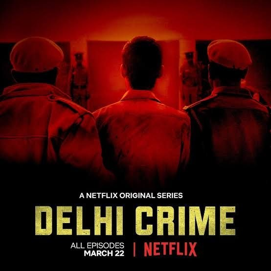

Director: റിച്ചി മേത്ത
Review by: ഷിജിൽ എം പി
ഒരു വെബ് സീരീസ് പരിചയപ്പെടുത്തുന്നു:
Delhi Crime – Season 01 (2019)
2012 ഡിസംബർ 16 ന് രാത്രി ഡെൽഹിയിലെ മുനിർക ബസ് സ്റ്റാൻഡിൽ നിന്നും ബസ് കയറിയ 23 വയസ്സുള്ള പെൺകുട്ടിയെയും കാമുകനെയും ബസിലുണ്ടായിരുന്ന ആറു പേർ ആക്രമിക്കുകയും, പെൺകുട്ടിയെ അതിക്രൂരമായി ബലാത്സംഗം ചെയ്തു ഇരുവരെയും റോഡിലേക്ക് വലിച്ചെറിയുകയും ചെയ്തു. ഈ സംഭവം പിന്നീട് ഇന്ത്യ മുഴുവൻ പിടിച്ചു കുലുക്കിയ “നിർഭയ കേസ്” എന്നറിയപ്പെട്ടു.
ഈ സംഭവത്തിലെ ഡെൽഹി പോലീസിന്റെ അന്വോഷണത്തെ അടിസ്ഥാനമാക്കി റിച്ചി മേത്ത സംവിധാനം ചെയ്തു നെറ്റ്ഫ്ലിക്സിലൂടെ പ്രക്ഷേപണം ചെയ്ത വെബ് സീരീസാണിത്.
ഈ സംഭവത്തെ ചിലർ മുതലെടുക്കാൻ ശ്രമിക്കുന്നതും, ഊണും ഉറക്കവും ഉപേക്ഷിച്ച് പോലീസ് കുറ്റവാളികളെ നിയമത്തിനു മുന്നിൽ കൊണ്ടുവരാൻ പ്രയത്നിക്കുന്നതും അതിനായി അവർ അനുഭവിക്കുന്ന മാനസിക സംഘർഷങ്ങളും വളരെ വ്യക്തമായി സംവിധായകൻ അവതരിപ്പിച്ചിട്ടുണ്ട്.
കുറ്റകൃത്യം നടന്നുകഴിഞ്ഞ് അഞ്ച് ദിവസത്തിനുള്ളിൽ ഡൽഹി പോലീസ് ആറ് പ്രതികളെയും പിടികൂടി. അഞ്ചു ദിവസവും കഴിഞ്ഞ് അവരെ കോടതിയിൽ ഹാജരാക്കിയതിനു ശേഷമാണ് പ്രതികളെ പിടി കൂടിയ വിവരം പുറംലോകമറിയുന്നത്. അത്രയും നാൾ മാധ്യമങ്ങളിലൂടെ ആ വിവരം പുറത്തറിയാത്തതിനു കാരണം ഡൽഹി പോലീസിൻ്റെ കൃത്യമായ പ്ലാനിങ്ങായിരുന്നു. അത് എല്ലാ കുറ്റവാളികളെയും പിടികൂടാനും അവർക്ക് പരമാവധി ശിക്ഷ വാങ്ങിക്കൊടുക്കാനും ഡൽഹി പോലീസിനെ സഹായിച്ചു. ആറു പേരിൽ ഒരാൾ ജയിലിൽ വച്ച് ആത്മഹത്യ ചെയ്തു. ഒരാൾ പ്രായപൂർത്തിയാവാത്തതിനാൽ മൂന്നുവർഷത്തെ കഠിനതടവിനു ശേഷം വിട്ടയച്ചു. മറ്റ് നാലുപേർക്കും വധശിക്ഷ വിധിക്കുകയും അത് 2020 മാർച്ച് 20 -ാം തീയതി നടപ്പിലാക്കുകയും ചെയ്തു.
ഈ വെബ് സീരീസിന് ഏഴ് എപ്പിസോഡുകളാണുള്ളത്. ഒറ്റയിരിപ്പിന് കണ്ടു തീർക്കാതെ എഴുന്നേൽക്കാനാവില്ല. 5 മണിക്കൂർ നീക്കിവക്കാൻ പറ്റുമെങ്കിൽ മാത്രം കണ്ടുതുടങ്ങാം. 😊☺️